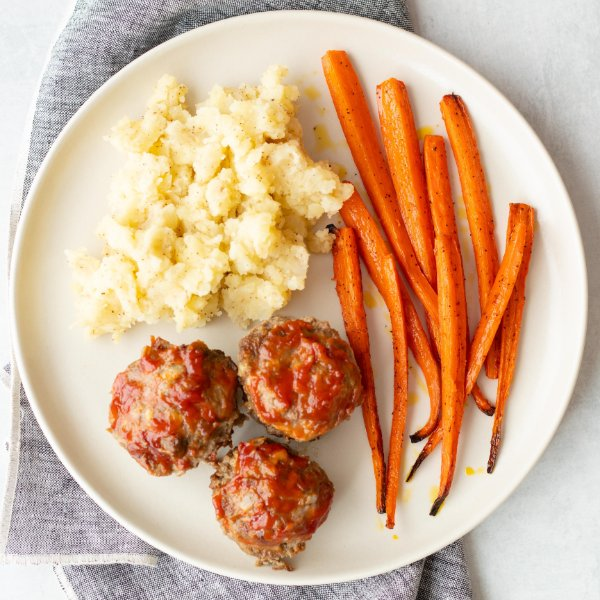

Mini Glazed Meatloaves with Mashed Potatoes & Roasted Carrots

Total Time
40 min
Nutrition (per serving)
681.8 kcalCalories
40.6 gProtein
41.6 gCarbs
39 gFat
Full nutrition table
| Calories | 681.8 kcal |
| Total fat | 39 g |
| Saturated fat | 14.8 g |
| Trans fat | 1.7 g |
| Cholesterol | 213.9 mg |
| Sodium | 411.9 mg |
| Carbohydrates | 41.6 g |
| Fiber | 6.3 g |
| Sugars | 14 g |
| Protein | 40.6 g |
| Potassium | 1434.3 mg |
| Calcium | 177.1 mg |
| Iron | 5.5 mg |
| Vitamin A | 354 IU |
| Vitamin C | 17.8 mg |
| Vitamin D | 57.1 IU |
Cookware
Ingredients
- 6 mediumcarrots
- 2eggs
- 1 ½ lblean ground beef
- 8 fl ozwhole milk
- 1 mediumyellow onion
- 2 mediumyellow potatoes
- black pepper
- brown sugar
- butter, unsalted
- Dijon mustard
- extra virgin olive oil
- ketchup
- panko bread crumbs
- salt
Steps
- Preheat the oven to 425°F.
- Peel and mince onion; place in a medium bowl.1 medium yellow onion
- Add ground beef, eggs, milk, bread crumbs, salt, and pepper to the bowl with the onions. Mix with your hands until well combined.1 ½ lb lean ground beef
2 eggs
4 fl oz (½ cup) whole milk
½ cup panko bread crumbs
1 tsp salt
1 tsp black pepper - Place ketchup, Dijon, and brown sugar in a small bowl; whisk to combine.3 tbsp ketchup
2 tsp Dijon mustard
1 tsp brown sugar - Divide meatloaf mixture between 12 muffin cups and top with ketchup glaze. Place in the oven and bake until cooked through, 20-25 minutes.
- Meanwhile, wash, peel, and medium dice potatoes. Transfer to a medium saucepan, cover with hot water (from the tap), and bring to a boil. Reduce heat to medium and cook until potatoes can be easily pierced with a fork, 10-12 minutes.2 medium yellow potatoes
- Wash, trim, and peel carrots. Slice lengthwise into quarters. Place on a baking sheet pan, drizzle with oil, and season with salt and pepper. Place in the oven and bake until golden and fork-tender, about 10 minutes.6 medium carrots
4 tsp extra virgin olive oil
⅛ tsp salt
⅛ tsp black pepper - When the potatoes are done, drain, and return to the pan.
- Add milk, butter, salt, and pepper to the potatoes. Mash until smooth.4 fl oz (½ cup) whole milk
4 tsp butter, unsalted
1 tsp salt
½ tsp black pepper - To serve, divide the meatloaves, roasted carrots, and mashed potatoes between plates. Enjoy!